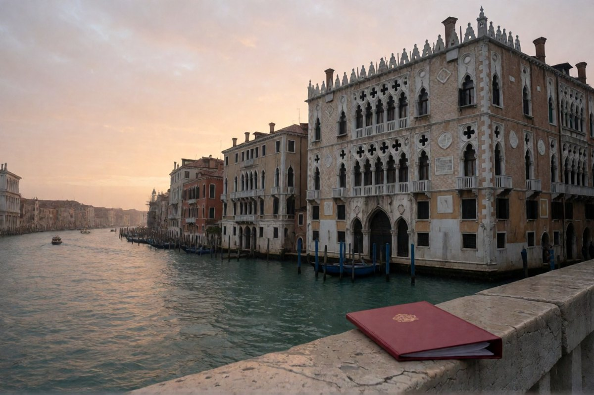

Politica italiana · 7 novembre 2026
Fine vita, il governo impugna la legge del Veneto e la Lega si divide

Il Consiglio dei ministri porta davanti alla Corte costituzionale la legge sul suicidio assistito dell'unica regione di centrodestra che ne ha una. Salvini non vota, Calderoli è contrario, Zaia rivendica la scelta.
di Franco Zanghì
Il 5 novembre il Consiglio dei ministri ha deciso di impugnare davanti alla Corte costituzionale la legge del Veneto sul suicidio assistito. Non è uno scontro fra maggioranza e opposizione: il Veneto è l'unica regione governata dal centrodestra ad avere una legge di questo tipo, e la legge l'ha voluta la Lega. Lo scontro è dentro la maggioranza.
La legge approvata a Venezia
A settembre il consiglio regionale del Veneto ha approvato il testo con 32 voti a favore, 14 contrari e 5 astenuti. Lega e Forza Italia hanno votato a favore, con qualche voto contrario; Fratelli d'Italia ha votato compatta contro, insieme all'unico consigliere del partito di Roberto Vannacci.
Decisivo il peso dei due leghisti più importanti della regione: il presidente Alberto Stefani e Luca Zaia, che il Veneto lo ha governato per quindici anni e oggi presiede il consiglio regionale. Stefani ha ottenuto alcune modifiche: nella commissione che valuta le richieste deve esserci un medico esperto di cure palliative, e chi chiede di morire deve essere informato che può ricorrere a quelle cure.
Il testo di partenza era la proposta dell'Associazione Luca Coscioni, che nel 2024, in Veneto, era stata bocciata per un solo voto.
La decisione del governo e la spaccatura nella Lega
La motivazione di Palazzo Chigi è la stessa di sempre: su questa materia la competenza è dello Stato, non delle regioni. Con lo stesso argomento il governo ha impugnato le leggi della Toscana e della Sardegna, governate dal centrosinistra; non ha impugnato quella dell'Umbria, la più recente. Sulle prime due la Corte costituzionale si è già pronunciata: ha ritenuto legittimo l'impianto generale, ordinando però di correggere alcune parti.
Il caso del Veneto però ha qualcosa in più. Secondo l'Ansa, il ministro Matteo Salvini non ha partecipato né alla discussione né al voto. Secondo il Post, il ministro per gli Affari regionali Roberto Calderoli, anche lui leghista, ha votato contro. E Zaia ha risposto rivendicando la scelta del consiglio regionale.
Il vuoto che dura da sette anni
In Italia il suicidio assistito, a precise condizioni, è legale dal 2019, per una sentenza della Corte costituzionale. Da allora la Corte chiede al Parlamento una legge nazionale. Sono passati sette anni, con governi di orientamento diverso, e quella legge non è mai arrivata. In Senato il confronto resta fermo.
È per questo che le regioni si muovono una alla volta, ognuna con le proprie regole. Il risultato è che a un malato di Padova, di Firenze o di Cagliari tocca un trattamento diverso a seconda dell'indirizzo di casa.
Il punto
Sul piano giuridico il governo è coerente: non ha colpito il Veneto perché è della Lega, ha fatto lo stesso con la Toscana. Ma la coerenza non basta. La maggioranza ha i numeri per scrivere una legge nazionale, con le cure palliative al centro e con tutte le garanzie che ritiene necessarie. Se non la scrive, lascia il campo alle sentenze e alle leggi regionali, e poi si trova costretta a impugnarle: una strada che porta soltanto ad altri ricorsi.
E resta il dato politico. Su una materia come questa, dentro la stessa maggioranza convivono tre posizioni: chi vota la legge, chi la impugna e chi al voto non si presenta. Prima o poi, a Roma, qualcuno dovrà scegliere.
Fonti
- Il Post, «Il governo impugnerà anche la legge sul suicidio assistito del Veneto, l'unica regione di centrodestra ad averne una», 5 novembre 2026
- Quotidiano Sanità, «Fine vita. Il Governo impugna la legge del Veneto. Imbarazzo nella Lega: Salvini non vota, Calderoli contrario», 5 novembre 2026
- Il Faro online, «Fine vita, il governo impugna la legge del Veneto: in Senato il confronto resta fermo», 7 novembre 2026
- Tgcom24
La legge impugnata non è annullata: resta in vigore fino alla decisione della Corte costituzionale, che non ha ancora una data. L'assenza di Salvini dal voto e il voto contrario di Calderoli sono riportati rispettivamente dall'Ansa e dal Post, e non risultano da un verbale pubblico.